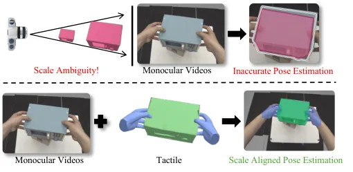
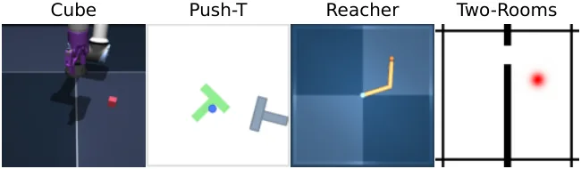
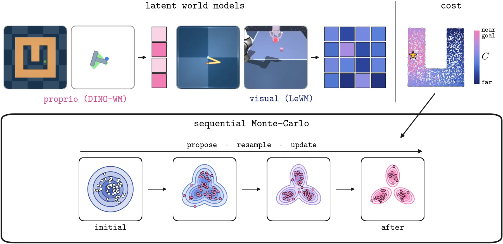

新论文 · 日期 2026-11-23 · score 15 · S层 · Geometry Foundation Models / 3D Foundation Models · cs.RO, cs.CV
内容级别：完整单篇海报
作者：Jackson Codd, Haoyu Li, Xianyi Cheng
评分 8.7/10
手–物重建触觉接触米制尺度单目几何联合优化自视角视频
一句话工作总结：一句话：单目看不出物体有多大多远，那就让「手摸到哪、两只手指隔多远」来当尺子——触觉提供与图像无关的物理证据，直接约束物体深度和尺度。
自视角视频是机器人模仿学习的廉价数据源，但单目重建物体几何与运动同时受尺度–深度歧义和手部遮挡困扰，图像推断出的接触与形状先验本身无法唯一确定米制尺度。TacHOI 是一个无需训练的框架：以预训练视觉结果（HaMeR 手、SAM 3D 物体网格、Do-As-I-Do 轨迹、ViPE 相机）为初值，把实测触觉压力转成两类约束——接触把物体沿视线方向拉到手上，标定手上分离的接触点又像卡尺一样给出物体外观尺寸。两类约束与…
Egocentric videos offer a scalable source of human demonstrations for robot learning. However, recovering metric object geometry and motion from monocular video is hindered by scale-depth ambiguity and hand-in…

新论文 · 日期 2026-11-23 · score 9 · A层 · Robotic Foundation Models / VLA · cs.RO, cs.SY, eess.SY
内容级别：半海报
作者：Junde Li, Wei-Han Yu, Xiangyi Chu, Yaoxin Li, Jiawei Xu, Ka-Fai Un, Pui-In Mak
评分 7.4/10
触觉 VLA前向–前向零阶优化滑移检测一类门控力控
一句话工作总结：一句话：不要再用「损失降了」当「力控对了」的证据——给每一层配一个可测的物理量，再用只前向的更新和一类门控把它闭环。
视觉–语言–动作（VLA）策略常被认为具备力控制能力，但这篇指出该假设在三个部署层面同时失效：冻结的视觉骨干丢掉了接触几何，下游损失掩盖了 token 级梯度对齐，离散指示量会触发优化崩塌。FORTH 给出一个只做前向的测量与执行框架，把每一层的优化目标与其物理可控观测量显式配对：层内前向–前向（Forward-Forward）触觉编码器在不反传的情况下保留空间接触几何；token 并行的零阶适配器在激活空间更新…
Vision-Language-Action (VLA) policies are widely credited with force control, operating on the unverified assumption that proxy loss minimization implies physical force grounding. In this work, we demonstrate…

新论文 · 日期 2026-11-23 · score 9 · A层 · Robotic Foundation Models / VLA · cs.RO, cs.LG
内容级别：半海报
作者：Tom\'as Couso Coddou, Christ Devia, Rex G. Liu, Rodrigo Toro Icarte
评分 7.9/10
世界模型JEPA潜动作空间规划变分自编码器分布对齐
一句话工作总结：一句话：不是把规划器改聪明，而是把「动作」换成「规划器本来就会采样的那种技能」，让模型在规划器提问的地方准确。
基于 JEPA 的世界模型在潜空间里预测动作后果，规划器则从高斯分布采样候选动作序列来挑最优。问题在于：模型只见过训练数据里结构化、随状态变化的动作，而规划器采的是各向同性高斯，预测因此不可靠，目标越远失败越多。Skill-JEPA 让动作空间与规划器对齐：一个以当前状态为条件的变分自编码器把短动作段编码成服从标准高斯先验的「技能」，解码回动作；世界模型改为预测技能的效果，规划器仍从同一个高斯出发搜索技能，候选因此…
World models based on Joint-Embedding Predictive Architectures (JEPAs) learn from pixels to predict the outcome of actions in a latent space. To reach a goal, a planner samples many candidate action sequences,…

新论文 · 日期 2026-11-23 · score 7 · A层 · Robotic Foundation Models / VLA · cs.RO
内容级别：半海报
作者：Hrishikesh Viswanath, Anindita Ghosh, Uttaran Bhattacharya, Aniket Bera
评分 7.7/10
潜空间规划序贯蒙特卡洛MPPI代价势世界模型粒子滤波
一句话工作总结：一句话：与其让规划器在潜空间里瞎采或硬爬坡，不如让一群粒子先按重要性权重走向目标分布，再用梯度把「计划」本身拉过去，并用图上的测地代价告诉粒子哪边通。
用学习到的世界模型做规划，本质是找一条能到达目标的动作序列。采样类规划器在长时程上容易失败，梯度类容易陷局部极小；MPPI 则在两者之间交替，但每次迭代都从高斯重新采样、只靠重要性权重逼近目标分布，而「趋向目标的轨迹」这个分布本身又很难直接写出来，因此需要一串中间分布。这篇把潜空间规划写成由序贯蒙特卡洛（SMC）引导的优化：SMC 步移动一群完整动作序列（粒子），梯度优化步用加权粒子更新名义计划，二者耦合迭代。作者…
Planning with learned world models amounts to finding action sequences whose predicted rollouts reach a goal. Sampling-based planners often struggle at longer horizons, while gradient-based methods can become…
新论文 · 日期 2026-11-23 · score 12 · B层 · Neural Rendering / 3DGS / NeRF · cs.CV, cs.GR
内容级别：简报式摘要
作者：Mohab Kishawy, Chengzhou Tang, Shahram Shirani, Jun Chen
评分 6.6/10
3D 高斯泼溅低光增强Retinex新视角合成
一句话工作总结：一句话：别让高斯去记「这里很暗」，把暗单独拎出来当一层可解析分离的滤镜，剩下的才是场景。
低光拍摄中的黑暗并不均匀：每个面收到多少光取决于它相对少数光源的位置，相机又用一条色调曲线压掉剩下的动态范围。多数低光三维重建要么对整幅图施加同一条曲线，要么把黑暗直接存进三维表示里吸收细节。VeilGS 把退化建模成覆盖在清晰场景上的一层「纱」：每个高斯携带反照率与阴影隐变量（替代球谐），每幅视图经过空间变化的增益与一条全局色调曲线变暗，去掉这层纱即为恢复结果；增益由一个小网络预测粗糙基，系数逐视图求解而非学习。…
In a dark capture, the darkness is not uniform. How much light reaches a surface depends on where it lies relative to the few light sources, and the camera compresses what remains with a tone curve. Most low-l…
新论文 · 日期 2026-11-23 · score 10 · B层 · Neural Rendering / 3DGS / NeRF · cs.GR, cs.PF
内容级别：简报式摘要
作者：Nicholas Jing Shou Nge, Yuang Shi, Geraldine Morin, Simone Gasparini, Anand Bhojan, Wei Tsang Ooi
评分 7/10
3D 高斯泼溅实时重建GPU 优化4K 训练边缘部署
一句话工作总结：一句话：把 4K 3DGS 训练从「研究级 GPU 的小时级」压到「消费卡的分钟级」，靠的是把每一步的工程瓶颈逐个拆掉。
3DGS 的输入已经是消费设备拍的高分辨率图像，训练却仍在降分辨率、研究级 GPU 上进行。PennyGS 逐段优化训练步：更精简的 splat（平面 RGB + 方向锥不透明度）、融合投影与键值生成、带跨步像素采样的前向光栅化优化、近似 tile SSIM 损失、每 splat 一个 warp 的反向光栅化、以及融合反向投影与稀疏 Adam。在标准 30k 步预算下，它在 Mip-NeRF 360 与 Tanks…
3D Gaussian Splatting is increasingly fed by high-resolution captures from commodity devices, yet training still happens at reduced resolution with research-grade GPUs. We present PennyGS, a method to achieve…